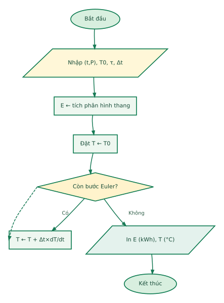

Khóa học / Mô-đun 4 / Bài 16
01 Mục tiêu và kiến thức tiên quyết
- Xấp xỉ đạo hàm bằng sai phân hữu hạn và tích phân bằng hình thang.
- Thực hiện bước Euler đối với mô hình vi phân tuyến tính.
- Kiểm tra đơn vị thời gian và ảnh hưởng của bước lấy mẫu.
Kiến thức tiên quyết: bài trước, kiến thức lập trình tương ứng.
02 Tình huống kỹ thuật
Từ bảng công suất điện theo thời gian, tính điện năng bằng tích phân số; đồng thời mô phỏng thay đổi nhiệt độ bằng phương pháp Euler cho phương trình vi phân bậc nhất.
Mốc t=[0,1,2] h, P=[1,2,2] kW; T0=30 °C, T_env=20 °C, τ=2 h, Δt=0,5 h.
E=3,5 kWh; T sau 2 h xấp xỉ 23,164 °C theo Euler.
03 Kiến thức và thuật ngữ cốt lõi
Sai phân hữu hạn
Ước lượng dT/dt ≈ (T[i+1]−T[i])/(t[i+1]−t[i]). Kết quả có đơn vị °C/h nếu t tính bằng giờ; bước bằng 0 không hợp lệ.
Tích phân số
Điện năng tích lũy E≈∫P(t)dt; nếu P kW và t h thì E kWh. numpy.trapezoid là cách tính quy tắc hình thang, cần dữ liệu thời gian tăng và cách lấy mẫu đúng.
Phương trình vi phân
Mô hình dT/dt=−(T−T_môi_trường)/τ mô tả đáp ứng nhiệt bậc nhất với τ>0 và nhiệt độ môi trường không đổi.
Euler tường minh
T_{k+1}=T_k+Δt f(t_k,T_k). Giảm bước thời gian có thể cải thiện độ chính xác nhưng tăng tính toán; bước quá lớn có thể gây mất ổn định cho mô hình minh họa.
04 Xây dựng và kiểm tra thuật toán
Trước khi xem chương trình, hãy đọc dữ liệu đầu vào, chọn điều kiện rẽ nhánh hoặc lặp, rồi dự đoán kết quả. Mã giả mô tả ý nghĩa thuật toán; không phải cú pháp Python thực thi được.

Mã giả
Lần vết các bước phân tích
Đây là lần vết các dòng mã giả, không phải trình thông dịch Python. Tự kiểm tra nhánh điều kiện bằng bảng ca kiểm thử ở mục 07.
05 Chương trình Python đã kiểm tra
Đọc mã, dự đoán kết quả và chạy tệp bai_16.py trong thư mục code. Các mã bài 9 trở lên có thể cần dữ liệu đi kèm từ thư mục data.
import numpy as np
t_h = np.array([0.0, 1.0, 2.0])
p_kw = np.array([1.0, 2.0, 2.0])
dien_nang_kwh = float(np.trapezoid(p_kw, t_h))
t_c, moi_truong_c, tau_h = 30.0, 20.0, 2.0
dt_h = 0.5
for _ in range(4):
toc_do_c_moi_h = -(t_c - moi_truong_c) / tau_h
t_c += dt_h * toc_do_c_moi_h
print(f"E = {dien_nang_kwh:.3f} kWh")
print(f"T(2 h) Euler = {t_c:.3f} °C")
06 Thử nghiệm tham số có hướng dẫn
Thay đổi đầu vào để kiểm tra trực giác và đối chiếu với kết quả dự đoán. Trình khám phá này được lập trình lại bằng JavaScript theo bài toán minh họa, không phải kết quả chạy mã Python.
07 Thực hành và kiểm thử
Thực hiện các nhiệm vụ theo thứ tự từ có hướng dẫn đến độc lập; ghi lại kết quả thực tế của chương trình và so sánh với kết quả kỳ vọng.
- Tính tay bước Euler thứ nhất, đối chiếu 27,5 °C.
- Thay dt=0,25 h với 8 bước, so sánh với dt=0,5 h.
- Dùng sai phân tính tốc độ thay đổi dữ liệu nhiệt độ.
Bảng kiểm thử bắt buộc
| Ca kiểm thử | Dữ liệu/điều kiện | Kết quả kỳ vọng |
|---|---|---|
| Hình thang | P=[1,2,2] kW, t=[0,1,2] h | E=3,5 kWh |
| Công suất hằng | P=[2,2] trên 1 h | E=2 kWh |
| Euler sau 0,5 h | T0=30, Tenv=20, tau=2 | T=27,5 °C |
| Δt=0 | Không tiến thời gian | Cần kiểm tra tiến trình |
08 Vận dụng vào chuyên ngành
Tích phân công suất điện đầu vào của máy lạnh theo thời gian để tính điện năng, không phải năng suất lạnh.
Ước lượng biến thiên nhiệt độ hoặc điện năng phụ tải điện theo dữ liệu mẫu.
09 Trắc nghiệm và phản hồi
Mỗi câu có bốn phương án A/B/C/D. Chọn một phương án cho mỗi câu rồi nhấn Chấm và giải thích để xem vì sao từng phương án đúng hoặc chưa phù hợp.
Rubric tham khảo (100 điểm)
| Thành phần | Điểm |
|---|---|
| Đặc tả dữ liệu, đơn vị, giả thiết | 20 |
| Mã giả, trình tự thuật toán | 20 |
| Mã Python và tổ chức hàm/dữ liệu | 25 |
| Kiểm thử, đối chiếu, phân tích sai số | 25 |
| Giải thích và đề xuất cải tiến | 10 |
10 Nhật ký học tập và đánh dấu tiến độ
Tiến độ và ghi chép chỉ lưu trong trình duyệt hiện tại; không đồng bộ với hệ thống điểm của trường.
11 Tài liệu tham khảo và nguồn
| Nguồn | Vai trò và phạm vi sử dụng |
|---|---|
| Python for Science and Engineering.pdf | H.-P. Halvorsen — tính toán số, giải phương trình, đồ thị, mô phỏng và dữ liệu kỹ thuật. |
| NumPy Documentation | NumPy ndarray và các phép toán đại số tuyến tính. |
| SciPy Documentation | SciPy optimize, integrate và công cụ tính toán khoa học. |
Học liệu mới được viết lại theo định hướng sư phạm. Không trích lại nguyên văn hoặc phân phối các slide/sách gốc trong gói website.